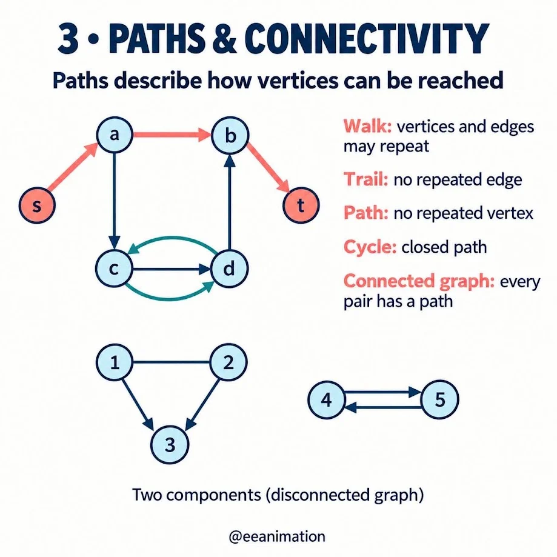

기둥 1 · 점과 선의 기초 · 03장
경로와 연결 — 어디서 어디로 갈 수 있나
걷기 · 트레일 · 경로 · 사이클, 그리고 덩어리 세기
걷기 · 트레일 · 경로 · 사이클, 그리고 덩어리 세기
핵심 질문 — 점에서 점으로 가는 길에는 어떤 종류가 있고, 그래프가 「이어져 있다」는 건 무슨 뜻일까?
그래프 위를 움직이는 방법을 정확히 부르는 이름이 네 가지 있어요. 같은 선을 다시 지나도 되는 걷기, 선은 안 겹치는 트레일, 점도 안 겹치는 경로, 제자리로 돌아오는 사이클. 그리고 모든 두 점 사이에 경로가 있으면 연결 그래프라고 불러요.
숫자 요약은 이 장의 예시 계산에서 나온 값입니다(실제 데이터가 아닌 설명용 값).
오늘은 시아의 개인발표로 시작해요. 생활 속 예시로 개념을 정확히 부르는 연습입니다.
제 통학길로 준비했어요. 조금 떨리지만 해 볼게요.
저는 발표 끝나고 상담이요. 「연결」이 헷갈려요.
코드·수식을 몰라도 됩니다. 그림을 눌러 움직여 보고, 밑줄 친 말을 누르면 뜻이 나옵니다.
이 페이지 사용법: 밑줄 친 말을 누르면 뜻이 나옵니다(Esc로 닫기). 단계마다 그림을 직접 움직여 보고, 끝의 확인 퀴즈로 점검하세요. 앞 장: 02 그래프 표현 — 같은 관계, 네 가지 모양
1조 시아가 「내 통학길은 걷기일까, 경로일까?」를 개인발표하고, 2조가 질문해요. 이어서 X1이 「연결이 끊겼다는 게 무슨 뜻이에요?」 하고 초파리 조장에게 상담을 받아요.
네 가지 이름은 「무엇을 다시 지나도 되는가」로만 갈라져요. 선인가, 점인가.
사이클은 경로랑 뭐가 달라요?
사이클은 출발점으로 돌아와. 돌아온 그 점 하나만 빼면 겹치는 점이 없어.
「같은 곳을 두 번 지나면 안 된다」가 점 얘기인지 선 얘기인지에 따라 답이 완전히 달라져요(5장 오일러 vs 해밀턴).
최단 경로(8장)를 구하기 전에 길이 있는지부터 확인해야 해요. 덩어리가 다르면 길이 없어요.
하나만 끊겨도 갈라지는 선(다리)은 통신망·도로망의 약점이에요.
네 가지 이름이 비슷해서 처음엔 헷갈려요. 「선이 겹치나? 점이 겹치나? 제자리로 오나?」 세 질문만 들고 실험을 눌러 보세요.
정리하면, 걷기 ⊃ 트레일 ⊃ 경로예요. 조건이 하나씩 더 엄격해져요.
2조 질문! 편의점 갈 때 정류장 → 편의점 길과 편의점 → 정류장 길이 같은 길이면요?
아… 같은 선을 두 번 지나니까 트레일도 아니고 걷기예요. 길이 하나뿐이면요.
좋은 질문이었어. 그래서 「선이 겹치나」와 「점이 겹치나」를 따로 봐야 해.
조장님, 원자료 그림에서 4와 5는 서로 화살표가 있는데 왜 「끊긴 그래프」래요?
4–5끼리는 이어져 있어. 그런데 1, 2, 3 쪽에서 4, 5로 가는 길이 없지. 덩어리가 두 개라서 「그래프 전체」는 끊긴 거야.
아, 선이 하나도 없다는 게 아니라 「건너갈 길이 없다」는 거군요.
맞아. 그래서 세는 건 「덩어리 수」야. 2단계 실험에서 선을 끊어 가며 덩어리를 세어 봐.
상황 질문 — 친구에게 길을 알려 주면서 「같은 데 두 번 지나지 마」라고 했어요. 같은 교차로를 말한 걸까요, 같은 골목을 말한 걸까요?
v₀ → v₁ → … → vₖ에서 작은 숫자들은 뭐고, 길이는 어떻게 세요?
학교 수학으로 보면: 중학교 「수열」에서 a₁, a₂, a₃처럼 순서대로 번호를 붙이는 것과 같아요.
| 식 조각 | 읽는 법 | 뜻 |
|---|---|---|
| v₀ | 브이 영 | 출발점 (0번째로 지나는 점) |
| vₖ | 브이 케이 | k번째로 지나는 점 = 도착점 |
| 길이 k | — | 지나는 선의 수 (점 수 − 1) |
원자료 경로: s → a → b → t → 점 4개, 선 3개, 길이 3
트레일 예: s → a → c → d → b → a (선 5개 모두 다름, 점 a를 두 번)
사이클 예: a → c → d → b → a (선 4개, 출발점 a로 돌아옴)
길이는 점이 아니라 선을 세는 거네요. 점이 4개면 선은 3개!
컴퓨터에서 길은 지나는 점 이름을 차례로 적은 목록이에요. 파이썬에서는 대괄호로 리스트를 만들어요.
「점이 겹치나?」는 목록 안에 같은 이름이 두 번 나오는지 세면 돼요. 컴퓨터는 이것을 1초도 안 걸려 해요.
길 = ['s', 'a', 'b', 't']
이름 개수 4개, 서로 다른 이름 4개 → 겹침 없음 → 경로
길 = ['s','a','c','d','b','a'] → 이름 6개, 서로 다른 이름 5개 → 점 a가 겹침
「목록 길이」와 「서로 다른 것의 개수」를 비교하는 생각은 데이터 정리에서 아주 자주 써요(중복 찾기).
통학길에 같은 골목(선)을 다시 걸으면 그냥 산책(걷기), 골목은 안 겹치는데 같은 교차로(점)를 다시 지나면 트레일, 교차로도 안 겹치면 깔끔한 경로예요.
걷기는 점과 선이 겹쳐도 되는 길, 트레일은 선이 겹치지 않는 길, 경로는 점이 겹치지 않는 길, 사이클은 출발점으로 돌아오는 경로(길이 3 이상)예요. 모든 경로는 트레일이고 모든 트레일은 걷기예요.
예시 단추 네 개를 차례로 눌러 보고, 빨간 선이 나오는 예가 무엇인지 찾아보세요.
점을 많이 지날수록 좋은 길 아닌가요? 「걷기 예」가 제일 길어요!
길이가 아니라 조건을 봐. 빨간 선(두 번 지난 선)이 있으면 트레일 자격이 없어.
원자료 「3 · Paths & Connectivity」 오른쪽 정의 목록(Walk, Trail, Path, Cycle, Connected graph)과 s → a → b → t 그림.

위 실험을 컴퓨터로 할 때 쓰는 코드 몇 줄이에요. 한 줄마다 뜻을 붙였어요. 읽지 않아도 본문을 따라오는 데 문제없어요.
직접 해 보려면 — 설치 없이 브라우저에서 파이썬을 돌리는 구글 Colab(colab.research.google.com)에서 새 노트를 열고, 맨 위에 import networkx as nx를 먼저 적은 뒤 아래 줄을 차례로 실행하세요. 결과가 페이지의 숫자와 같은지 비교하는 것이 가장 좋은 연습이에요.
path = ['s', 'a', 'b', 't']len(path) == len(set(path))nx.is_simple_path(G, path)nx.has_path(G, 's', 't')상황 질문 — 섬 마을을 잇는 다리 중 하나가 태풍에 끊겼어요. 어느 다리가 끊기면 마을이 둘로 갈라질까요?
덩어리를 세는 데도 공식이 있어요?
학교 수학으로 보면: 공식보다는 「차례로 칠하기」 방법이에요. 초등학교 색칠 공부에서 선 안쪽을 한 색으로 채우는 것과 같아요.
| 식 조각 | 읽는 법 | 뜻 |
|---|---|---|
| c(G) | 씨 오브 지 | 그래프 G의 연결 요소(덩어리) 수 |
| c(G) = 1 | — | 연결 그래프 |
| |E| ≥ n − c(G) | — | 덩어리 c개를 만들려면 선이 적어도 n − c개 필요 |
점 8개 그래프에서 선을 모두 이으면 덩어리 1개
선 3–4를 끊으면 {1, 2, 3}과 {4, 5, 6, 7, 8} → 덩어리 2개
점 6개를 하나로 잇는 최소 선 수 = 6 − 1 = 5
덩어리 하나 만드는 데 선이 최소 「점 수 − 1」개! 4장 트리에서 또 나온다고 했죠?
섬 마을 지도에서 다리로 오갈 수 있는 마을끼리 같은 색을 칠하면, 색의 개수가 「서로 못 가는 섬 무리」의 수예요. 하나만 끊겨도 색이 늘어나는 다리는 특히 중요해요.
연결 요소는 서로 경로가 있는 점들의 최대 덩어리예요. 덩어리가 1개면 연결 그래프예요. 끊으면 덩어리 수가 늘어나는 선을 「다리(bridge)」라고 불러요. 원자료 아래 그림은 {1, 2, 3}과 {4, 5}, 덩어리 2개예요.
선을 하나씩 끊어 보세요. 덩어리 수가 바로 늘어나는 선은 어떤 선인가요?
선이 많은 곳을 끊으면 제일 크게 갈라지겠죠!
「다리 보기」를 눌러 봐. 선이 많은 곳이 아니라 「유일한 통로」가 약점이야.
원자료 아래 그림 「Two components (disconnected graph)」.
위 실험을 컴퓨터로 할 때 쓰는 코드 몇 줄이에요. 한 줄마다 뜻을 붙였어요. 읽지 않아도 본문을 따라오는 데 문제없어요.
직접 해 보려면 — 설치 없이 브라우저에서 파이썬을 돌리는 구글 Colab(colab.research.google.com)에서 새 노트를 열고, 맨 위에 import networkx as nx를 먼저 적은 뒤 아래 줄을 차례로 실행하세요. 결과가 페이지의 숫자와 같은지 비교하는 것이 가장 좋은 연습이에요.
nx.number_connected_components(G)list(nx.connected_components(G))list(nx.bridges(G))1조 하루가 AI에게 「점 6개인 그래프가 연결되려면 선이 최소 몇 개 필요해요?」라고 물었어요.
AI가 조건을 더 엄격하게 바꿔 답하는 경우가 많아요. 「직접 이어짐」과 「길이 있음」처럼, 질문의 낱말을 정의로 바꿔 다시 확인하세요.
AI 답변을 두고 두 조장이 숫자를 걸었어요. 심판은 점 6개를 일자로 이어 덩어리 수를 세어 판정합니다.
「5개. 일자로 이으면 돼.」
「점 6개니까 선도 6개는 있어야죠!」
누가 맞을지 먼저 예상해 보고 단추를 누르세요. 심판 박사는 계산 결과로만 판정합니다.
개념정리 흐름: 걷기·트레일·경로·사이클 → 연결 그래프와 연결 요소
| 개념 | 한 줄 뜻 | 일상 비유 | 비유의 한계 |
|---|---|---|---|
| 경로 | 점이 겹치지 않는 길 | 한 번씩만 들르는 통학길 | 「다시 지나면 안 된다」가 점인지 선인지 늘 확인 |
| 사이클 | 제자리로 돌아오는 경로 | 공원 한 바퀴 | 길이 3 이상이어야 사이클 |
| 연결 요소 | 서로 길이 있는 점들의 덩어리 | 다리로 이어진 섬 무리 | 방향 그래프에서는 「한쪽으로만」 갈 수도 있어요 |
오늘 대결은 2조 승. 시아의 발표도, X1의 상담도 좋았어요. 핵심은 「선이 겹치나, 점이 겹치나」.
발표 끝! 질문 덕분에 트레일을 확실히 알았어요.
연결 = 건너갈 길이 있다. 이제 안 헷갈려요.
다음 장 예고: 04장은 모아의 상담으로 시작해요. 「회사 조직도와 폴더 구조는 왜 트리라고 불러요?」 — 사이클 없는 연결 그래프와 가장 싼 신장 트리를 찾아요.